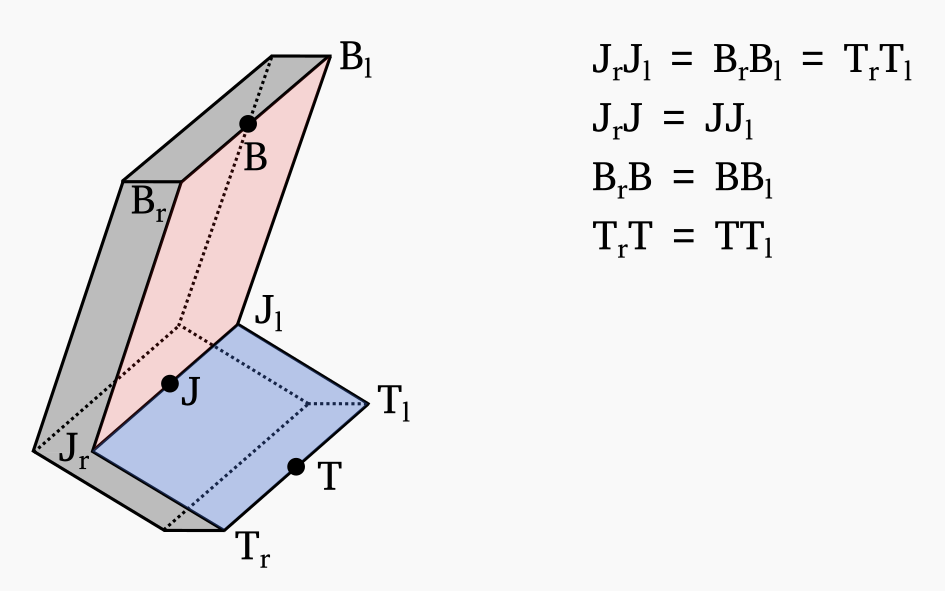

Documentation for the bulldozer blade
The bulldozer’s blade has usually a complex shape that is not suitable for first-order modelling. In this simulator, the blade is approximated as a combination of two rectangular prisms to simplify its representation. An illustration of the simulated blade is provided below.
The different parts of the blade are named in order to maintain consistency with the excavator bucket. As a result, some of these names does not perfectly described the corresponding blade part. However, consistency is viewed as more important than descriptive names. The naming convention is as follows:
Jrepresents the blade joint.Brepresents the blade base, that is the top of the blade.Trepresents the blade teeth.The surface defined by the vertices \(T_lT_rJ_rJ_l\) is referred to as the blade heel.
The surface defined by the vertices \(J_lJ_rB_rB_l\) is referred to as the blade ankle.
The blade is assumed to have a thickness of two cell_size_xy_ to ensure that intersecting soil cells are properly moved, that is, moved in the direction of the blade movement.
Note that this is working under the assumption that the movement made by the blade between two steps is at most one cell size.
The reference pose of the blade is specified when creating the Blade class and is defined by the fields j_pos_init_, b_pos_init_, and t_pos_init_, which correspond to the positions of the blade joint, base, and teeth, respectively.
These positions correspond to the front of the blade, while the position of the back of the blade can be easily obtained by assuming a constant thickness of two cell_size_xy_.
The centre of rotation for the blade o_pos_init is provided when building the Blade class.
The position of the blade joint, base, and teeth are defined relative to this blade origin.
The pose of the blade (pos_) is provided to the simulator as the Cartesian position of the blade origin and its orientation (ori_) relative to the reference pose, using the Quaternion notation.